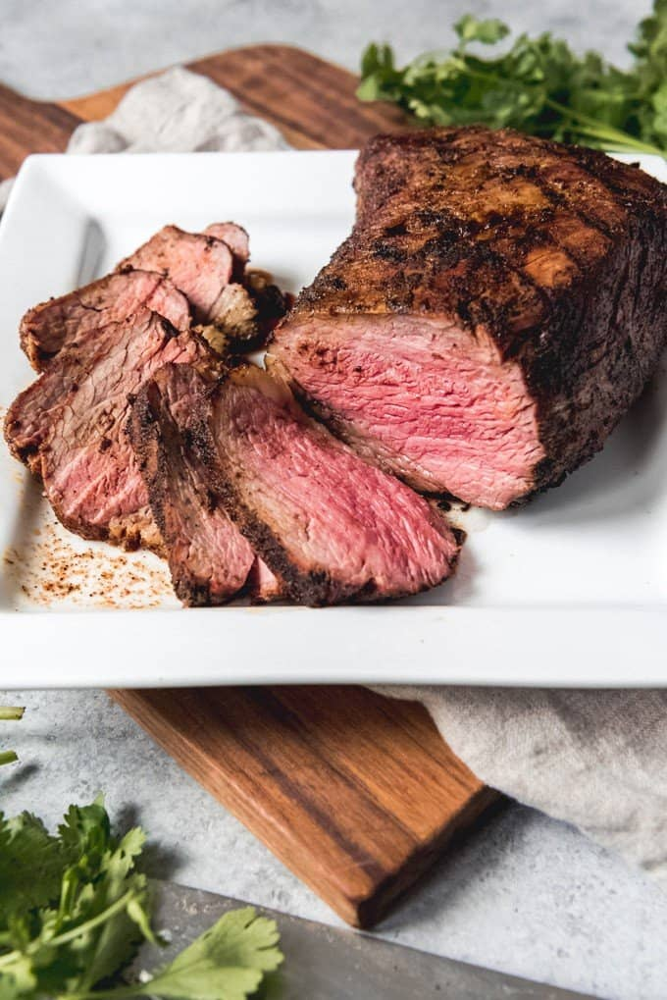

Grilled Tri Tip
The Santa Maria Way

Description
This is a mouthwatering cut of meat, seasoned with Santa Maria spices.
Seared on the stovetop, then finished off in your grill.
Ingredients
- 1 (2 1/2 to 4 lb) tri-tip
- 1 tablespoon kosher salt
- 1 tablespoon finely ground black pepper
- 1 tablespoon garlic powder
- 1 tablespoon onion powder
- 1 tablespoon dried oregano
- 1 teaspoon cayenne pepper
- 1 teaspoon dried rosemary
- 1/2 teaspoon dried sage
Steps
- Mix the rub ingredients together in a bowl. Place the roast in a
roasting pan or a baking pan with edges (this will help keep the rub
from getting all over the floor). Sprinkle the rub on the meat on all
sides, and massage the rub into the meat. Cover and let sit for 1 hour
- Prepare your grill for hot direct heat on one side, and indirect heat on the other.
- Sear the roast for 3 to 4 minutes per side. Keep moving the tri-tip away from the
flame if flare-ups occur.
- Once the tri-tip is seared on all sides, move it away from direct heat and
place it fat-side up on the grill rack. If you are using a gas grill,
you can use it with the top rack. Try to maintain a grill temperature of 250°F to 300°F.
- Cover the grill and cook until the temperature of the interior of the tri-tip
reaches 120°F for a rare roast, 130°F for medium-rare and 140°F for medium.
At this point the meat will take anywhere from 20 to
40 minutes to cook. Note that the interior temperature will continue to rise at
least 5°F after you take the roast off the heat.
- Once the roast reaches temperature, remove it from the grill and let it rest, loosely
tented with foil, for 10 to 15 minutes. Slice across the grain to serve.